Getting Started with AI on Supercomputers
Parallelize Training
Alexandre Strube // Sabrina Benassou
December 13, 2023
The ResNet50 Model
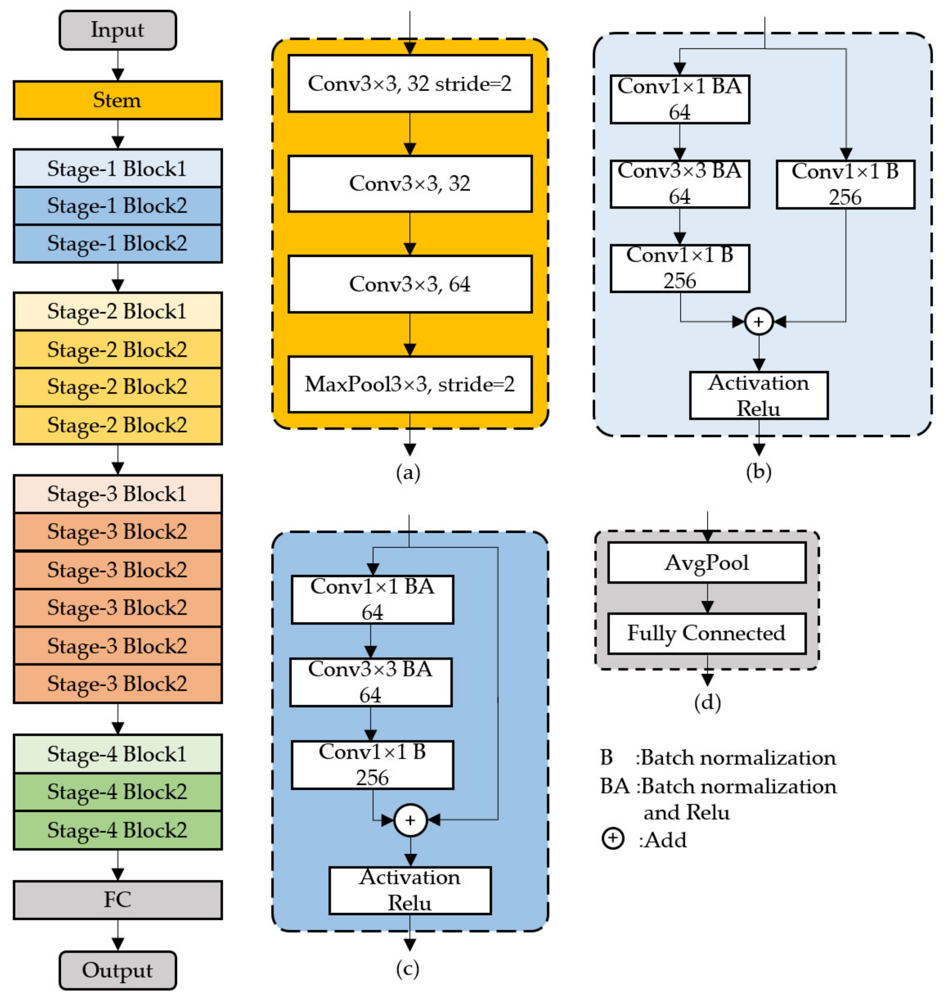
ImageNet class
class ImageNet(Dataset):
def __init__(self, root, split, transform=None):
self.samples = []
self.targets = []
self.transform = transform
self.syn_to_class = {}
with open(os.path.join(root, "imagenet_class_index.json"), "rb") as f:
json_file = json.load(f)
for class_id, v in json_file.items():
self.syn_to_class[v[0]] = int(class_id)
with open(os.path.join(root, "ILSVRC2012_val_labels.json"), "rb") as f:
self.val_to_syn = json.load(f)
samples_dir = os.path.join(root, "ILSVRC/Data/CLS-LOC", split)
for entry in os.listdir(samples_dir):
if split == "train":
syn_id = entry
target = self.syn_to_class[syn_id]
syn_folder = os.path.join(samples_dir, syn_id)
for sample in os.listdir(syn_folder):
sample_path = os.path.join(syn_folder, sample)
self.samples.append(sample_path)
self.targets.append(target)
elif split == "val":
syn_id = self.val_to_syn[entry]
target = self.syn_to_class[syn_id]
sample_path = os.path.join(samples_dir, entry)
self.samples.append(sample_path)
self.targets.append(target)
def __len__(self):
return len(self.samples)
def __getitem__(self, idx):
x = Image.open(self.samples[idx]).convert("RGB")
if self.transform:
x = self.transform(x)
return x, self.targets[idx]PyTorch Lightning Data Module
class ImageNetDataModule(pl.LightningDataModule):
def __init__(
self,
data_root: str,
batch_size: int,
num_workers: int,
dataset_transforms: dict(),
):
super().__init__()
self.data_root = data_root
self.batch_size = batch_size
self.num_workers = num_workers
self.dataset_transforms = dataset_transforms
def setup(self, stage: Optional[str] = None):
self.train = ImageNet(self.data_root, "train", self.dataset_transforms)
def train_dataloader(self):
return DataLoader(self.train, batch_size=self.batch_size, \
num_workers=self.num_workers)PyTorch Lightning Module
class resnet50Model(pl.LightningModule):
def __init__(self):
super().__init__()
self.model = resnet50(pretrained=True)
def forward(self, x):
return self.model(x)
def training_step(self,batch):
x, labels = batch
pred=self.forward(x)
train_loss = F.cross_entropy(pred, labels)
self.log("training_loss", train_loss)
return train_loss
def configure_optimizers(self):
return torch.optim.Adam(self.parameters(), lr=0.02)One GPU training
transform = transforms.Compose([
transforms.ToTensor(),
transforms.Resize((256, 256))
])
# 1. Organize the data
datamodule = ImageNetDataModule("/p/scratch/training2402/data/", 256, \
int(os.getenv('SLURM_CPUS_PER_TASK')), transform)
# 2. Build the model using desired Task
model = resnet50Model()
# 3. Create the trainer
trainer = pl.Trainer(max_epochs=10, accelerator="gpu")
# 4. Train the model
trainer.fit(model, datamodule=datamodule)
# 5. Save the model!
trainer.save_checkpoint("image_classification_model.pt")One GPU training
#!/bin/bash -x
#SBATCH --nodes=1
#SBATCH --gres=gpu:1
#SBATCH --ntasks-per-node=1
#SBATCH --cpus-per-task=96
#SBATCH --time=06:00:00
#SBATCH --partition=booster
#SBATCH --account=training2402
#SBATCH --output=%j.out
#SBATCH --error=%j.err
#SBATCH --reservation=training-booster-2024-03-13
# To get number of cpu per task
export SRUN_CPUS_PER_TASK="$SLURM_CPUS_PER_TASK"
# activate env
source $HOME/course/$USER/sc_venv_template/activate.sh
# run script from above
time srun python3 gpu_training.pyDEMO
But what about many GPUs?
- It’s when things get interesting
Data Parallel
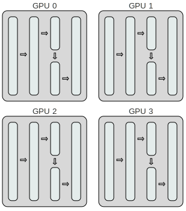
Data Parallel
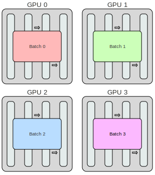
Data Parallel - Averaging
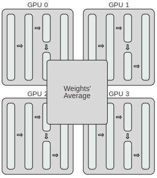
Multi-GPU training
1 node and 4 GPU
#!/bin/bash -x
#SBATCH --nodes=1
#SBATCH --gres=gpu:4 # Use the 4 GPUs available
#SBATCH --ntasks-per-node=4 # When using pl it should always be set to 4
#SBATCH --cpus-per-task=24 # Divide the number of cpus (96) by the number of GPUs (4)
#SBATCH --time=02:00:00
#SBATCH --partition=booster
#SBATCH --account=training2402
#SBATCH --output=%j.out
#SBATCH --error=%j.err
#SBATCH --reservation=training-booster-2024-03-13
export CUDA_VISIBLE_DEVICES=0,1,2,3 # Very important to make the GPUs visible
export SRUN_CPUS_PER_TASK="$SLURM_CPUS_PER_TASK"
source $HOME/course/$USER/sc_venv_template/activate.sh
time srun python3 gpu_training.pyDEMO
That’s it for data parallel!
- Copy of the model on each GPU
- Use different data for each GPU
- Everything else is the same
- Average after each iteration
- Update of the weights
There are more levels!

Data Parallel - Multi Node
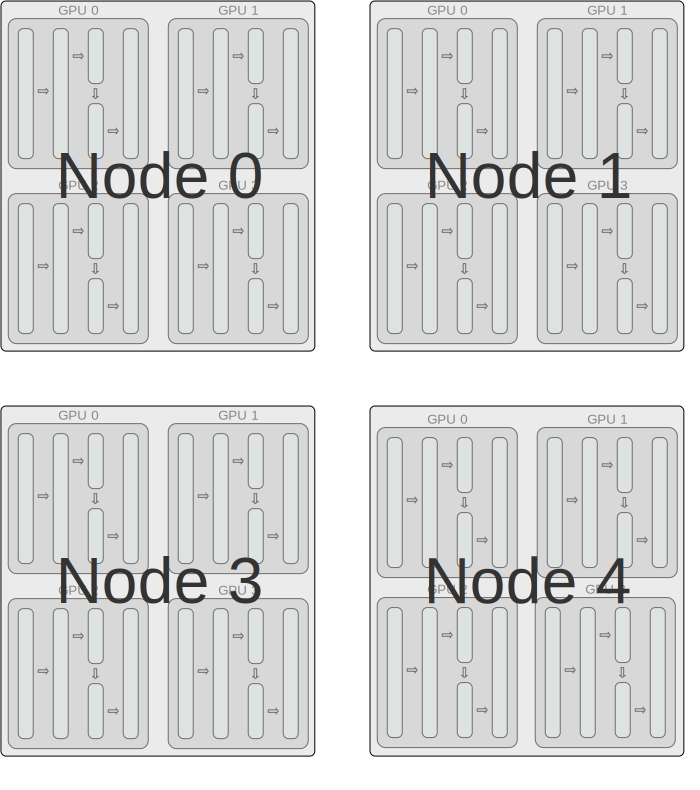
Data Parallel - Multi Node

Before we go further…
- Data parallel is usually good enough 👌
- If you need more than this, you should be giving this course, not me 🤷♂️
Model Parallel
- Model itself is too big to fit in one single GPU 🐋
- Each GPU holds a slice of the model 🍕
- Data moves from one GPU to the next
Model Parallel
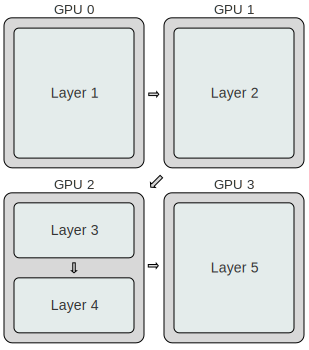
Model Parallel
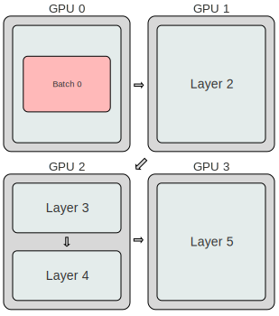
Model Parallel
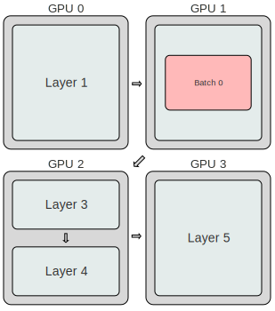
Model Parallel
Model Parallel
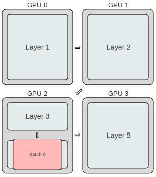
Model Parallel
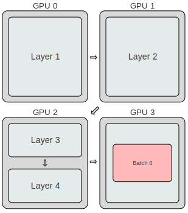
Model Parallel
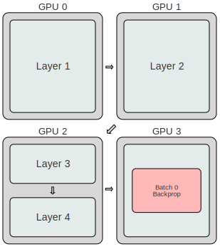
Model Parallel
Model Parallel
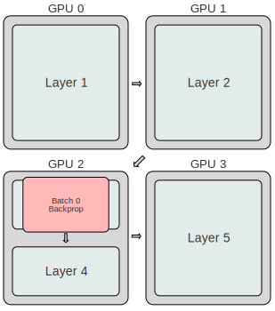
Model Parallel
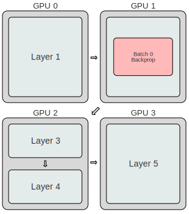
Model Parallel
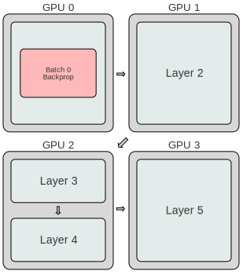
What’s the problem here? 🧐
Model Parallel
- Waste of resources
- While one GPU is working, others are waiting the whole process to end
- 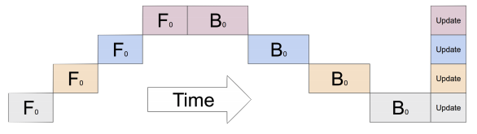
Model Parallel - Pipelining
Model Parallel - Pipelining
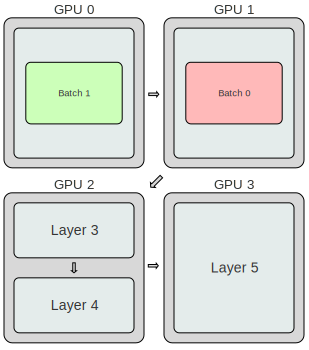
Model Parallel - Pipelining
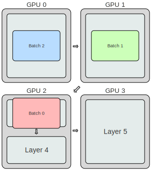
Model Parallel - Pipelining
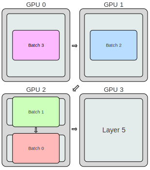
Model Parallel - Pipelining
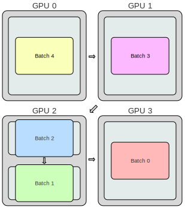
Model Parallel - Pipelining
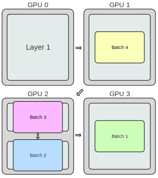
Model Parallel - Pipelining
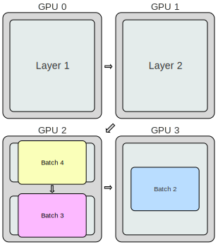
Model Parallel - Pipelining
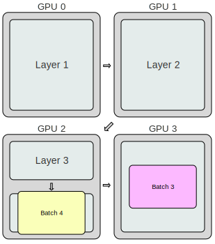
Model Parallel - Pipelining
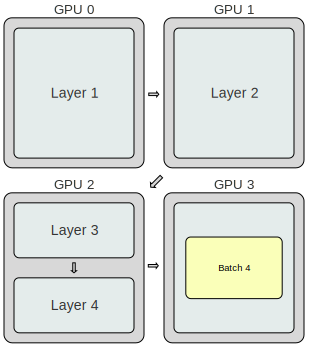
This is an oversimplification!
- Actually, you split the input minibatch into multiple microbatches.
- There’s still idle time - an unavoidable “bubble” 🫧
- 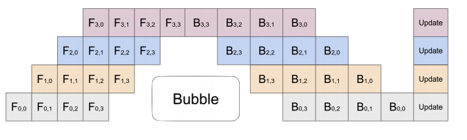
Model Parallel - Multi Node
- In this case, each node does the same as the others.
- At each step, they all synchronize their weights.
Model Parallel - Multi Node
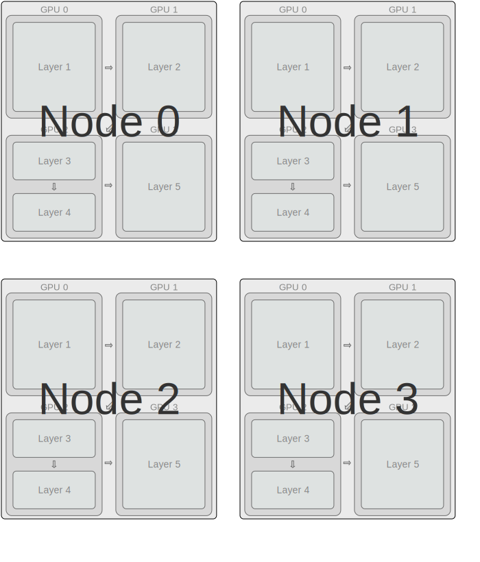
Model Parallel - going bigger
- You can also have layers spreaded over multiple gpus
- One can even pipeline among nodes….
Recap
- Data parallelism:
- Split the data over multiple GPUs
- Each GPU runs the whole model
- The gradients are averaged at each step
- Update of the model’s weights
- Data parallelism, multi-node:
- Same, but gradients are averaged across nodes
- Model parallelism:
- Split the model over multiple GPUs
- Each GPU does the forward/backward pass
- Model parallelism, multi-node:
- Same, but gradients are averaged across nodes
Parallel Training with PyTorch DDP
- PyTorch’s
DDP (Distributed Data Parallel) works as follows:
- Each GPU across each node gets its own process.
- Each GPU gets visibility into a subset of the overall dataset. It will only ever see that subset.
- Each process inits the model.
- Each process performs a full forward and backward pass in parallel.
- The gradients are synced and averaged across all processes.
- Each process updates its optimizer.
Terminologies
- WORLD_SIZE: number of processes participating in the job.
- RANK: the rank of the process in the network.
- LOCAL_RANK: the rank of the process on the local machine.
- MASTER_PORT: free port on machine with rank 0.
DDP steps
- Set up the environement variables for the distributed mode (WORLD_SIZE, RANK, LOCAL_RANK …)
DDP steps
- Initialize a sampler to specify the sequence of indices/keys used in data loading.
- Implements data parallelism of the model.
- Allow only one process to save checkpoints.
DDP steps
transform = transforms.Compose([
transforms.ToTensor(),
transforms.Resize((256, 256))
])
# 1. The number of nodes
nnodes = os.getenv("SLURM_NNODES")
# 2. Organize the data
datamodule = ImageNetDataModule("/p/scratch/training2402/data/", 128, \
int(os.getenv('SLURM_CPUS_PER_TASK')), transform)
# 3. Build the model using desired Task
model = resnet50Model()
# 4. Create the trainer
trainer = pl.Trainer(max_epochs=10, accelerator="gpu", num_nodes=nnodes)
# 5. Train the model
trainer.fit(model, datamodule=datamodule)
# 6. Save the model!
trainer.save_checkpoint("image_classification_model.pt")DDP training
16 nodes and 4 GPU each
#!/bin/bash -x
#SBATCH --nodes=16 # This needs to match Trainer(num_nodes=...)
#SBATCH --gres=gpu:4 # Use the 4 GPUs available
#SBATCH --ntasks-per-node=4 # When using pl it should always be set to 4
#SBATCH --cpus-per-task=24 # Divide the number of cpus (96) by the number of GPUs (4)
#SBATCH --time=00:15:00
#SBATCH --partition=booster
#SBATCH --account=training2402
#SBATCH --output=%j.out
#SBATCH --error=%j.err
#SBATCH --reservation=training-booster-2024-03-13
export CUDA_VISIBLE_DEVICES=0,1,2,3 # Very important to make the GPUs visible
export SRUN_CPUS_PER_TASK="$SLURM_CPUS_PER_TASK"
source $HOME/course/$USER/sc_venv_template/activate.sh
time srun python3 ddp_training.pyDDP training
With 4 nodes:
With 8 nodes:
With 16 nodes:
With 32 nodes:
Data Parallel
- It was
- Became
Data Parallel
- It was
- Became
#SBATCH --nodes=16 # This needs to match Trainer(num_nodes=...) #SBATCH --gres=gpu:4 # Use the 4 GPUs available #SBATCH --ntasks-per-node=4 # When using pl it should always be set to 4 #SBATCH --cpus-per-task=24 # Divide the number of cpus (96) by the number of GPUs (4) export CUDA_VISIBLE_DEVICES=0,1,2,3 # Very important to make the GPUs visible
DEMO
TensorBoard
- In resnet50.py
- 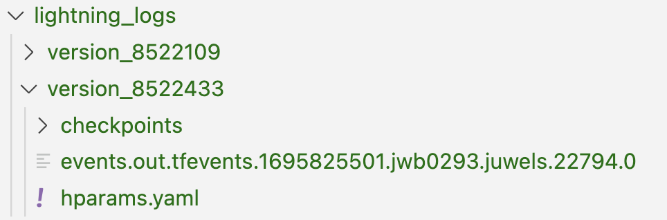
TensorBoard
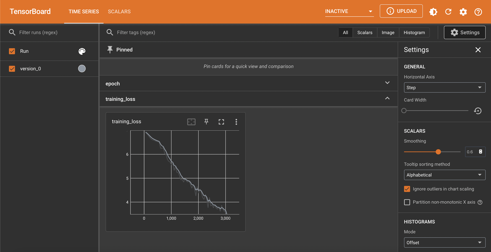
DEMO
Llview
- llview
- https://go.fzj.de/llview-juwelsbooster 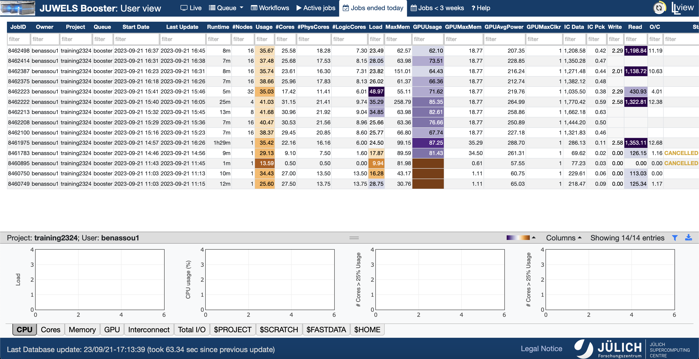
DAY 2 RECAP
- Access using FS, Arrow, and H5 files
- Ran parallel code.
- Can submit single node, multi-gpu and multi-node training.
- Use TensorBoard on the supercomputer.
- Usage of llview.